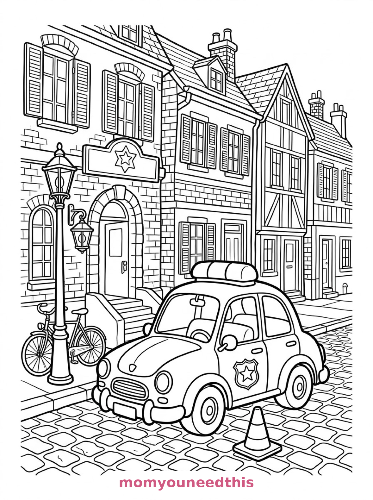
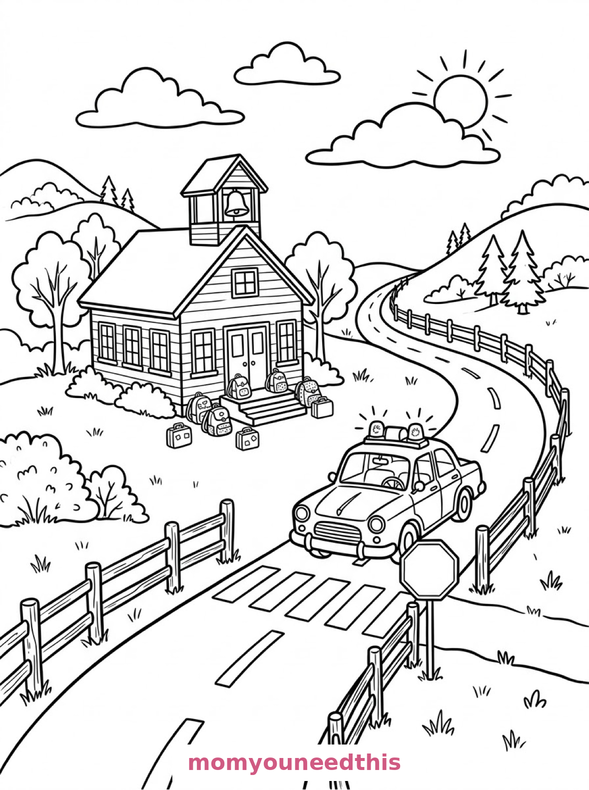
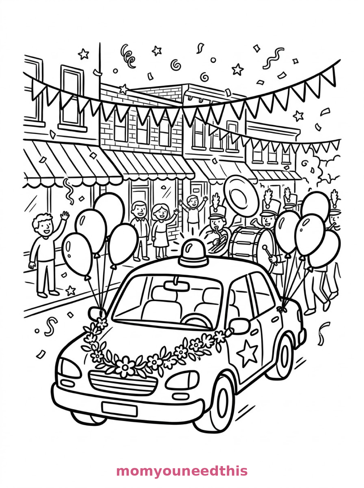

Free Police Car Coloring Pages Station, School Crossing & Parade Printables
These free police car coloring pages patrol three friendly scenes — a car outside its brick station, a car stopped at a school crossing, and a car leading a small-town parade. Download the set below, print at home on letter-size paper, and let the coloring fun begin. No signup needed.
Last updated: October 23, 2026
Quick Answer
Yes — this page has three free printable police car coloring pages: a police car with a light bar parked outside a brick police station, a police car stopped at a school crosswalk on a country road, and a police car decorated with flowers leading a parade. Bold outlines and big spaces, made for little hands. Download, print on letter-size paper, and hand over the crayons — no signup, no cost.
At a Glance
- Ages: 3–8
- Pages: 3 free printables
- Format: Print at home, letter size
- Cost: Free, no signup
- Supplies: Crayons or markers
- Time: 10–20 minutes
🚓 Police Car at the Station Coloring Page

🎨 Download Your Free Police Station Coloring Page
A storybook police car with a light bar on its roof sits on a cobbled street in front of a brick police station with an arched doorway and a hanging lantern, a traffic cone by its wheel and a bicycle leaning against a lamppost — bold outlines, big spaces, zero signup.
⬇️ Download Free Police Station Page 🖨️ Print Police Station Page🎁 Free printable for preschoolers & kids
🛑 Police Car at the School Crossing Coloring Page

🎨 Download Your Free School Crossing Coloring Page
A police car drives along a winding country road and stops at a crosswalk where a stop sign stands, with a schoolhouse with a bell tower across the road and backpacks and lunchboxes waiting on the school steps — bold outlines, big spaces, zero signup.
⬇️ Download Free Crossing Page 🖨️ Print Crossing Page🎁 Free printable for preschoolers & kids
🎉 Police Car Leading the Parade Coloring Page

🎨 Download Your Free Parade Police Car Coloring Page
A police car leads a small-town parade, decorated with a garland of flowers across its hood and balloons tied to its mirrors, confetti drifting in the air and a brass band's tuba and drum just visible behind — bold outlines, big spaces, zero signup.
⬇️ Download Free Parade Page 🖨️ Print Parade Page🎁 Free printable for preschoolers & kids
More Coloring Pages
Tap any picture to open its theme page and download the free printable.


🚓 How To Use This Page
- Browse the three designs and pick the police car scene your child will love most.
- Tap download or print under that design — the file opens full-size, ready for letter-size paper.
- Print a couple of copies of the parade car — the flower garland deserves a rainbow.
- Color together with crayons or markers and keep the siren sounds optional.
🛑 Why Kids Love Police Car Coloring Pages
Police cars are helpers on wheels, and these pages show the helping, not the chasing: a car keeping its station street tidy, a car stopped patiently at a school crossing, and a car dressed in flowers leading the town parade. There is a light bar to color, a star badge to decorate, and a whole town around each scene.
The school crossing page does double duty, too — it is a road-safety scene kids recognize from their own mornings, with a stop sign, a crosswalk and backpacks waiting on the steps. Coloring it is a calm way to revisit how crossing works.
🚓 Meet the Three Police Car Scenes on This Page
The car at the station. A storybook police car with a light bar on its roof parked on a cobbled street in front of a brick police station with an arched doorway and a hanging lantern, a traffic cone beside the front wheel, a bicycle leaning against a lamppost, and tall townhouses with shuttered windows lining the street behind. It is the classic page in the set — one car, one station, one quiet street.
The car at the school crossing. A police car driving along a winding country road with its roof lights raised, a crossing guard's stop sign planted at a crosswalk in front of it, a schoolhouse with a bell tower across the road, children-sized backpacks and lunchboxes waiting on the school steps, and fences and rounded hills rolling away on both sides. It is the most teachable page in the set — a safety scene dressed as a coloring page.
The car leading the parade. A police car at the front of a small-town parade, decorated with a garland of flowers across its hood and balloons tied to its mirrors, confetti shapes drifting in the air, a brass band's tuba and drum just visible behind it, and shop awnings and bunting strung between buildings along the main street. It is the happiest page in the set — the garland alone is a full coloring project.
✏️ Police Car Coloring Tips
- Classic black-and-white, or your town's colors. Many police cars are black and white or blue and white — match your local cars, or invent your own livery.
- Make the light bar glow. Red and blue lights, colored bright against the roof, are the detail every kid colors first.
- Stop-sign red. The crossing page's stop sign is the one thing that must be red — a fun rule for kids to enforce themselves.
- Rainbow the garland. On the parade page, the flower garland and balloons carry the celebration — every color you own belongs there.
🚓 Coloring Pages for Different Ages
For ages 3 to 4, start with the station car. One big car, a cone and a bicycle are all a little colorer needs on a cobbled street.
For ages 5 to 6, the school crossing is the sweet spot. The car and the schoolhouse are bold shapes, and the backpacks and hills add gentle scene-building.
For ages 7 to 8, hand over the parade. The garland, the balloons, the band instruments and the shop awnings reward careful, detailed coloring — a full main street of it.
🎉 More Police Car Fun After Coloring
Draw the rest of the parade: the parade page only shows the tuba and drum behind the car — what comes next? More band members, a float, the fire truck? A blank sheet of paper continues the street.
Meet the car's emergency partner on the fire truck coloring pages — station, rescue cat and vintage parade included. And for more big wheels, the truck coloring pages are parked nearby.
🔗 More Free Printables You’ll Love
- Free Fire Truck Coloring Pages A station, a rescue cat and a vintage parade truck to color.
- Free Train Coloring Pages A viaduct, a country station and a mountain freight run.
- Free Truck Coloring Pages Trucks to print and color, with bold outlines and big spaces.
- All Free Coloring Pages Browse every free coloring page on the site, organized by theme.
❓ Police Car Coloring Pages FAQ
Are these police car coloring pages really free?
Yes — all three designs on this page are free original printables from MomYouNeedThis. Download them, print them at home, and color — no signup and no cost.
What ages are these coloring pages best for?
Kids ages 3 to 8 get the most from this set. The station car is the gentlest start for younger children, while the school crossing and parade scenes have the detail older kids enjoy.
How do I print a coloring page?
Tap the download button under the design you want, then print the file on regular letter-size paper. The print button opens the full-size page in a new tab if you prefer to print from there.
Is there a parade police car in this set?
Yes — the third design shows a police car leading a small-town parade, decorated with a flower garland and balloons, with a brass band's tuba and drum behind it.
Can I make a police car coloring book from these pages?
Yes — print all three designs, stack them in order, and staple along the left edge. Add a cover sheet with your child's name for a finished homemade police car coloring book.